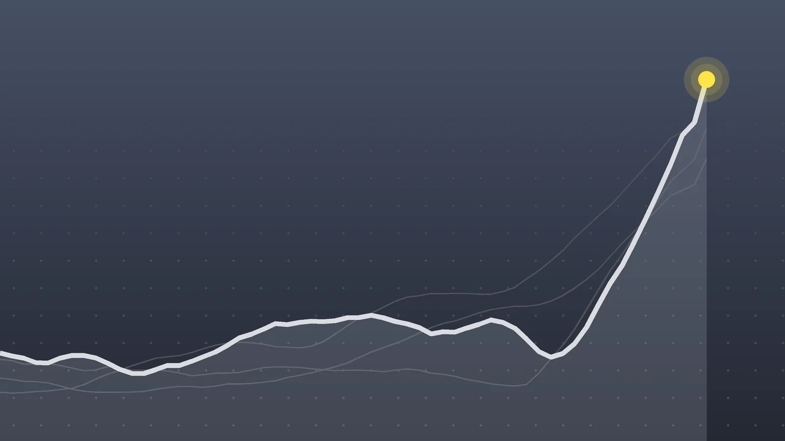

PoliticsExplainer
Comey Charged a 3rd Time Over a 2016 Leak to The New York Times
Prosecutors used a rarely contested filing to beat a 10-year deadline by days, and whether that move is legal may decide the case before any facts are argued.

Quick take
- The Justice Department filed a two-count criminal information against James Comey under seal on Oct. 5, 2026; a federal judge in Washington unsealed it on Oct. 26.
- Prosecutors accuse Comey of causing national defense information to reach a New York Times reporter for an Oct. 5, 2016, article about Yahoo and a secret surveillance order.
- Comey has not been indicted by a grand jury, and his lawyers say the 10-year statute of limitations ran out because an information alone is not enough.
- Comey says he is innocent; his first case was dismissed in November 2025, and a second case in North Carolina is set for trial in February 2027.
Why it's trending A two-count case accusing James Comey of leaking national defense information in 2016 was unsealed on Oct. 26, 2026, the third time the Justice Department has charged him in about 13 months.
What happened
James Comey, who led the FBI until 2017, now faces a third set of federal charges. A two-count filing, kept under seal since Oct. 5, was made public on Monday, Oct. 26, by U.S. District Judge Trevor McFadden in Washington, D.C. It accuses Comey of transmitting national defense information to someone not entitled to receive it and of conspiring to do so, according to NBC News. CBS News describes both counts as Espionage Act charges.
Comey denies wrongdoing. In a video posted Monday he said nothing had changed and that he is “still innocent,” AP reported. The Justice Department called it “an ongoing criminal investigation” and declined further comment.
What the Comey charges are about
The case reaches back a decade. In a separate filing on Oct. 23, prosecutors tied it to an Oct. 5, 2016, New York Times story by Charlie Savage reporting that Yahoo had helped U.S. authorities search customer emails under a secret order from the Foreign Intelligence Surveillance Court.
According to NBC, prosecutors say Comey wanted to correct a Reuters report published the day before and told staff to talk to Savage about it, and that classified information was passed along in the process. The three-page charging document itself names no reporter or outlet; it refers only to an unnamed “Individual #1” who it says was directed to share the information with a reporter.
The same leak was examined twice during Trump’s first term. AP reports that a probe led by John Durham produced a December 2018 memo recommending no charges, and a second investigation by the U.S. attorney’s office in Washington closed in February 2020, also without charges.
Information vs. indictment: why the paperwork matters
Most federal felony cases start with a grand jury indictment. This one started with a criminal information, a charge prosecutors can file on their own. AP and CBS note that an information is usually filed with the defendant’s agreement, often as part of a plea deal.
The timing explains the choice. The alleged disclosure happened on Oct. 5, 2016. The deadline for these charges is 10 years. Prosecutors filed on Oct. 5, 2026, exactly 10 years later.
- The government’s position: the Justice Department says filing a “waiverless” information pauses the clock while the case continues, a practice it says several federal appeals courts have accepted, per NBC and AP.
- The defense position: Comey’s lawyers, in a motion filed Oct. 16, argue the 10-year limit can be met only by a grand jury indictment, and they asked the judge to throw out the case as “time barred,” Law&Crime reports.
There is a practical catch, too. NBC reports that Comey cannot be arrested, arraigned or put on trial on the information alone. Prosecutors would still need a grand jury indictment, if the court allows it, unless Comey agrees to waive one.
Three cases in 13 months
| Date | Case | Status |
|---|---|---|
| Sept. 25, 2025 | Eastern District of Virginia: false statement and obstruction, tied to 2020 Senate testimony | Dismissed Nov. 2025 after a judge ruled the prosecutor was unlawfully appointed; the Justice Department appealed |
| April 28, 2026 | Eastern District of North Carolina: two counts over a May 2025 “86 47” seashell photo | Pending; trial moved to February 2027 |
| Oct. 5, 2026 (unsealed Oct. 26) | District of Columbia: Espionage Act information over the 2016 Times story | Motion to dismiss pending |
Who says what
Comey’s lawyer, Patrick Fitzgerald, told AP the filing was “not approved by a judge nor issued by a grand jury” and said Comey will fight the charges in the open. Comey called the effort “an appalling abuse” of the Justice Department, NBC reported, and Al Jazeera reports he described the cases as political retribution.
The Justice Department has denied prosecuting Comey for his political views. President Donald Trump, who fired Comey in 2017, has repeatedly attacked him, but no new White House statement on this filing appeared in the coverage reviewed for this explainer.
On the same day, a federal judge in New York ruled that Comey’s daughter, former federal prosecutor Maurene Comey, was unlawfully fired in July 2025, CBS News reported. The Justice Department said it would appeal.
What happens next
No court date has been reported. The first question is legal, not factual: Judge McFadden must decide whether the information was enough to stop the statute-of-limitations clock. If he agrees with the defense, the case likely ends there. If he sides with the government, prosecutors would still have to seek an indictment before a trial could happen. The North Carolina case and the appeal of the Virginia dismissal continue separately.
Quick answers
Was James Comey indicted again?
No. He was charged by criminal information, which prosecutors file without a grand jury. A grand jury has not indicted him in this case.
What is Comey accused of leaking?
Prosecutors say classified details reached a New York Times reporter for an October 2016 story on Yahoo and a secret surveillance court order. Comey says he is innocent.
Why does the statute of limitations matter?
The limit for these charges is 10 years, and the alleged leak was Oct. 5, 2016. The case depends on whether the Oct. 5, 2026, filing counts in time without an indictment.
Sources
- Associated Press via PBS NewsHour Trump administration charges former FBI Director James Comey for the third timeOct. 26, 2026
- NBC News via Yahoo News James Comey charged for a third time by the Trump administrationOct. 26, 2026
- CBS News DOJ takes steps to charge James Comey againOct. 26, 2026
- Al Jazeera Former FBI director James Comey hit with third set of charges under TrumpOct. 26, 2026
- Law&Crime via Yahoo News Trump DOJ's 'unusual and improper approach' could be a 'fatal problem' for unsealed third case against James ComeyOct. 27, 2026
- CBS News Maurene Comey, James Comey's daughter, was unlawfully fired, judge rulesOct. 26, 2026
- News & Observer via Spokesman-Review James Comey's North Carolina '86 47' trial pushed to 2027Sept. 27, 2026
Keep reading

Hunter Biden Laptop: 2 Ex-FBI Officials Charged Over Testimony
Ex-FBI officials Nikki Floris and Bradley Benavides are charged with lying to Congress about the Hunter Biden laptop probe. The case, the defense and what’s next.

Louise Lucas Indicted: Virginia Senator Faces Marijuana Charges
Virginia state Sen. Louise Lucas was indicted Oct. 22 in a federal marijuana racketeering case. What prosecutors allege, her response and what comes next.

Machado Returns to Venezuela After 10 Months, Pushes for a Vote
María Corina Machado returned to Venezuela on Oct. 25 after 10 months abroad. Here’s how she got back, why it matters and where the push for elections stands.